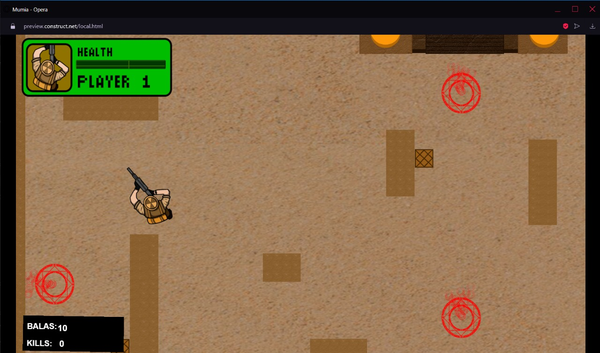
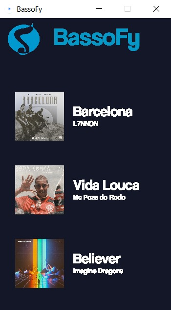
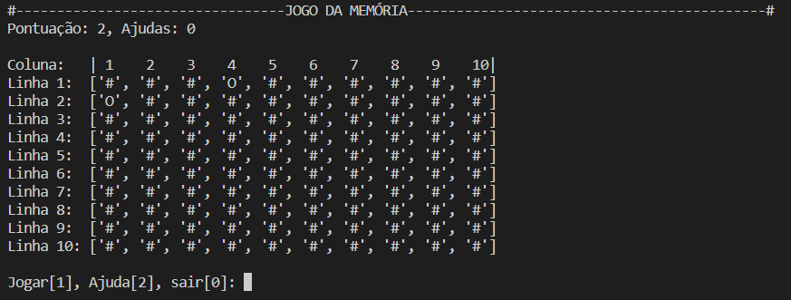

Olá, eu sou João Gregorini
Programador Full-Stack
Sobre:
Residente: Curitiba/PR
Formação Academica:
SENAI - Unidade Afonso Pena
Técnico em Desenvolvimento de Sistemas
Janeiro 2020 - Junho 2021
Supervisor do curso: Professor Wellington Telles Cunha
PUCPR - Campus Curitiba
Bacharelado em Ciência da Computação
Inicio: Março/2022
Previsão de término: dezembro 2025
Supervisor do curso: Dr. Vilmar Abreu Junior
Projetos

- Projeto construido na plataforma construct 3
- Camêra isométrica
- Jogo tem como objetivo alcançar a maior pontuação possível

- Projeto construido na IDE processing
- Aplicação baseada na implementação de váriais midias
- Aplicação se basea num aplicativo de reprodução de músicas

- Projeto codificado em Python
- Jogo da memória
- Diferentes dificuldades e opção de ajuda